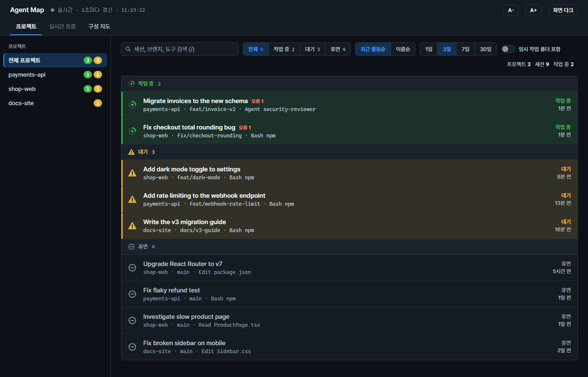

Claude Code plugin
agent-map
See what every Claude Code session is doing, live.
Live dashboard per project
Step-by-step flow with timings
Config map of skills, agents, MCP

local-first · zero dependencies · no model tokens